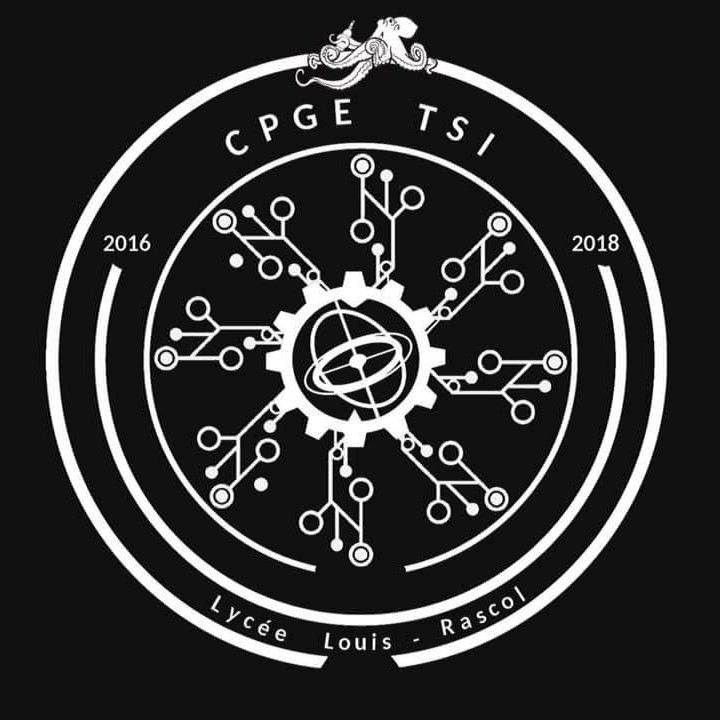
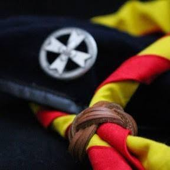
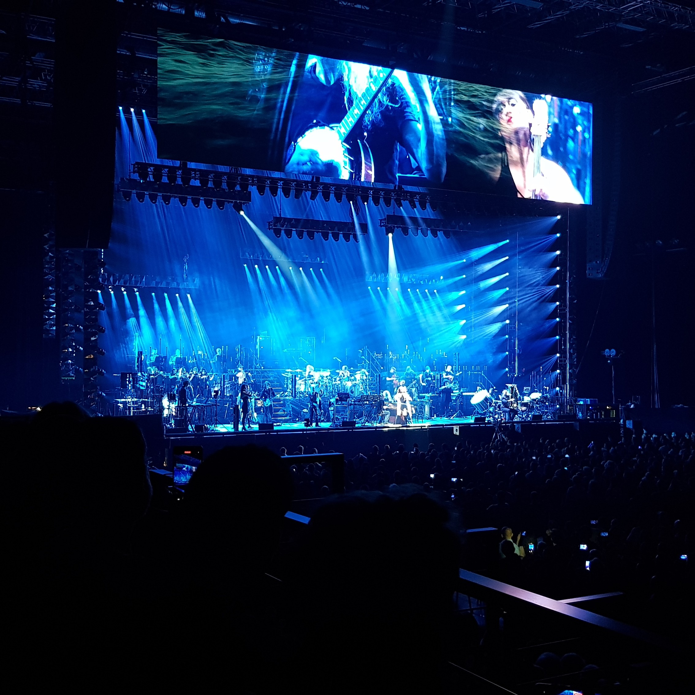

Steven Lamerly
Gameplay & Tools Programmer
Presentation

As I grew older, that interest turned into a true passion for programming.
It was only natural that I pursued computer science studies before specializing in video game development.
Today, as a Gameplay & Tools programmer, I constantly aim to enhance the player experience and design high-performance tools to optimize developers' workflow.
Through my passions, studies, and professional experience, I developed strong listening and analytical skills.
These allow me to understand the needs of designers, colleagues, and clients, and propose tailored technical solutions.
My curiosity also led me to explore diverse fields and industries, which gave me strong versatility, excellent adaptability, and a creative approach to technical challenges.
I therefore integrate very easily into multidisciplinary teams.
Throughout my journey, I discovered a real interest in team and project management.
I had the opportunity to lead teams in various contexts: in scouting, in competitive rowing, during my studies (IUT Informatique and ARTFX), and more recently as the head of a large team for my graduation project.
These experiences helped me develop key skills in leadership, communication, and Agile methodology, giving me all the tools to coordinate a group and successfully deliver a project.
Hobbies
🎮 Video Games
Having started gaming at a very young age, I closely followed the evolution of the industry, which allowed me to build a broad gaming culture.
This immersion led me to explore a wide variety of genres, enriching my understanding of gameplay mechanics and player expectations.
From my first Lego games to the strategy of Age of Empires, through the creativity of Minecraft, the action of Assassin's Creed, the space simulation of X4: Foundations, and the fast-paced energy of Quake, I developed a deep passion for immersive, complex, and innovative experiences.
⛺ Scouting & Travel ✈

This foundational experience taught me core values: community life, resourcefulness, autonomy, and resilience, while also developing my skills in leadership and team management from an early age.
At the same time, whether through scouting, family trips, or solo travel, I had the chance to travel a lot.
From the Pacific coast of California to the wild landscapes of Sweden, through the festive culture of Spain and the beaches of the Seychelles, each destination broadened my horizons, shaped my open-mindedness, and strengthened my ability to adapt to the unknown.
🎵 Music & Sports 🚣

On the music side, I play drums and bass as an amateur, which developed my rhythmic sensitivity, coordination, and listening skills.
On the sports side, I practiced judo and especially competitive rowing for 10 years; two disciplines that taught me discipline, self-improvement, and the team spirit essential for collaboration.
Naturally curious, I also enjoy trying more demanding sports such as paragliding, an excellent school for stress management and decision-making.
🛸 Science Fiction & Fantasy 🧙
I have always been fascinated by science fiction and fantasy worlds.
My culture was built through literature — from Foundation by Isaac Asimov to the Elfes comics, and the novels of the Black Library (Warhammer) — but also through cinema and TV series (Star Wars, Star Trek, The Lord of the Rings, Legend of the Galactic Heroes).
Naturally, this passion is reflected in my game choices, with impactful narrative and strategy works such as Mass Effect, Warcraft III, and adaptations of the Warhammer universe (Total War, Space Marine, Rogue Trader).